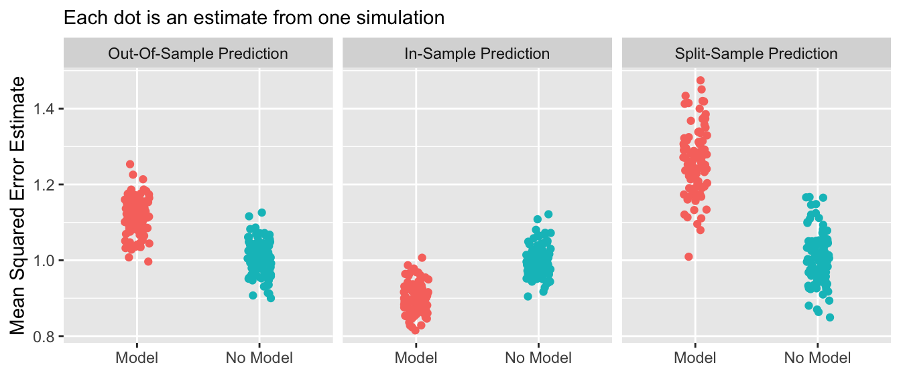

generate_data <- function(sample_size = 1000, num_features = 100) {
# Predictors are independent Normal
X <- replicate(num_features, rnorm(sample_size))
colnames(X) <- paste0("x",1:num_features)
as_tibble(X) |>
# Outcome is an independent Normal
mutate(y = rnorm(n()))
}Sample Splitting
A predictive model is an input-output function:
- the input is a set of features \(\vec{x}\)
- the output is a predicted outcome \(\hat{y}\)
The performance of a model can be measured by how well the output \(\hat{y}\) corresponds to the true outcome \(y\). This page considers three ways to assess the performance of a model.
- In-sample prediction
- learn a model using our sample
- predict in that same sample
- evaluate mean squared error
- Out-of-sample prediction
- learn a model in one sample
- predict in a new sample from the same data generating process
- evaluate mean squared error in the new sample
- Split-sample prediction
- split our sampled cases randomly into training and testing sets
- learn a model in the training set
- predict in the testing set
- evaluate mean squared error in the testing set
Often, the purpose a predictive model is to accomplish out-of-sample prediction (2). But when learning the model, often only one sample is available. Therefore, evaluation by split-sample prediction (3) is often desirable because it most closely mimics this task.
Simulated setting
When a model is evaluated by in-sample prediction, there is a danger: even if the features have no predictive value in the population, a model might discover patterns that exist in the training sample due to random variation.
To illustrate this, we generate a simulation with 100 features x1,…,x100 and one outcome y, all of which are independent normal variables. We know from the beginning that x* should be useless predictors: they contain no information about y.
We first load tidyverse
and write a function to generate the data
before applying that function to generate one sample.
data <- generate_data(sample_size = 1000, num_features = 100)In-sample prediction
We then estimate a linear regression model, where . includes all the x1,…,x100 features other than y as predictors.
model <- lm(y ~ ., data = data)and a benchmark of no model, which only includes an intercept.
no_model <- lm(y ~ 1, data = data)We know from the simulation that the model is useless: the x-variables contain no information about y. But if we make predictions in-sample, we will see that the mean squared error of the model is surprisingly lower (better) than no model.
data |>
mutate(
predicted_model = predict(model),
predicted_no_model = predict(no_model),
squared_error_model = (y - predicted_model) ^ 2,
squared_error_no_model = (y - predicted_no_model) ^ 2,
) |>
select(starts_with("squared")) |>
summarize_all(.funs = mean)# A tibble: 1 × 2
squared_error_model squared_error_no_model
<dbl> <dbl>
1 0.902 1.00Out-of-sample prediction
The problem is that the model fit to the noise in the data. We can see this with the out-of-sample performance assessment. First, we generate a new dataset of out-of-sample data.
out_of_sample <- generate_data()Then, we use the model learned in data and predict in out_of_sample. By this evaluation, predictions are now worse (higher mean squared error) than no model.
out_of_sample |>
mutate(
predicted_model = predict(model, newdata = out_of_sample),
predicted_no_model = predict(no_model, newdata = out_of_sample),
squared_error_model = (y - predicted_model) ^ 2,
squared_error_no_model = (y - predicted_no_model) ^ 2,
) |>
select(starts_with("squared")) |>
summarize_all(.funs = mean)# A tibble: 1 × 2
squared_error_model squared_error_no_model
<dbl> <dbl>
1 1.05 0.981Split-sample prediction
In practice, we often do not have a second sample. We can therefore mimic the out-of-sample task by a sample split, which we can create using the initial_split function in the rsample package,
library(rsample)
split <- initial_split(data, prop = .5)which randomly assigns the data into training and testing sets of equal size. We can extract those data by typing training(split) and testing(split).
The strategy is to learn on training(split)
model <- lm(y ~ ., data = training(split))
no_model <- lm(y ~ 1, data = training(split))and evaluate performance on testing(split).
testing(split) |>
mutate(
predicted_model = predict(model, newdata = testing(split)),
predicted_no_model = predict(no_model, newdata = testing(split)),
squared_error_model = (y - predicted_model) ^ 2,
squared_error_no_model = (y - predicted_no_model) ^ 2,
) |>
select(starts_with("squared")) |>
summarize_all(.funs = mean)# A tibble: 1 × 2
squared_error_model squared_error_no_model
<dbl> <dbl>
1 1.29 1.01Just like the out-of-sample prediction, this shows that the model is worse than no model at all. By sample splitting, we can learn this even when we have only one sample.
An important caveat is that sample splitting has a cost: the number of cases available for training is smaller once we split the sample. This can mean that the sample-split predictions will have worse performance than predictions trained on the full sample and evaluated out-of-sample.
Repeating this many times
If we repeat the above many times, we can see the distribution of these performance evaluation strategies across repeated samples.
Attaching package: 'foreach'The following objects are masked from 'package:purrr':
accumulate, when
By the gold standard of out-of-sample prediction, no model is better than a model. In-sample prediction yields the misleading appearance that a model is better than no model. Split-sample prediction successfully mimics the out-of-sample behavior when only one sample is available.
Closing thoughts
Sample splitting is an art as much as a science. In particular applications, the gain from sample splitting is not always clear and must be balanced against the reduction in cases available for training. It is important to remember that out-of-sample prediction remains the gold standard, and sample splitting is one way to approximate that when only one sample is available.